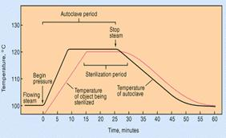

AMBE 101 :: Lecture 03 :: PROTECTION AGAINST INFECTIONS

The control of microbial growth is necessary in many practical situations, and significant advances in agriculture, medicine, and food science have been made through study of this area of microbiology. The microorganisms are ubiquitous in nature. In order to study the nature and characteristics of a particular microbe, it is essential to isolate it from other contaminating microorganisms. This can be achieved by maintaining a completely sterile environment in which the microbe of interest is selectively grown. It is necessary that not only the place you are working with microorganisms should be free from contamination (other living organisms) but, the media and the materials you are using to handle and grow specific microorganisms should be free from other microbial contaminants. For this purpose ‘sterilization’ of the place of work materials and media have to be done.
“Control of growth” as used here means to prevent the growth of microorganisms. This control is affected in two basic ways: (1) by killing microorganisms or (2) by inhibiting the growth of microorganisms. Control of growth usually involves the use of physical or chemical agents which either kill or prevent the growth of microorganisms. Agents which kill cells are called cidal agents; agents which inhibit the growth of cells (without killing them) are referred to as static agents. Thus the term bactericidal refers to killing bacteria and bacteriostatic refers to inhibiting the growth of bacterial cells. A bactericide kills bacteria; a fungicide kills fungi, and so on.
Sterilization is a process of complete removal or killing of all forms of microbial life including spores from an object, surface, medium or environment without spoiling its nature.
Methods
There are various sterilization techniques available. However, several factorsinfluence the effectiveness of sterilization process like, the concentration of antimicrobial agents, time and temperature of exposure, size of population, type of contaminating microbes etc.
Sterilization is brought about by a combination of physical and chemical agents that adversely affect the microorganisms either by causing damage to the cell wall or cell membrane or by inactivating the enzymes or by interfering with the synthesis of nucleic acids and protein.
I. PHYSICAL AGENTS
There are different types of physical agents.
(i) Heat: The heat employed for removal of micro-organisms varied with the nature of object and also depend on the purpose. Based on these different processes are employed.
(a) Moist heat
It is the widely used effective means of sterilization process. In this, steam under high pressure is employed which imparts high penetration power resulting in the hydration of cells and coagulation of protein leading to the death of the microorganism. Autoclave is the apparatus used for sterilization by moist heat.
The autoclave is a double-jacketed steam chamber. The chamber is equipped with a device for generating saturated steam. It can be maintained at a particular temperature and pressure for any period of time. During operation of autoclave the air in the chamber is evacuated by steam since presence of air will reduce the temperature in the chamber. The time required for sterilization will depend upon the materials to be sterilized. Solid materials must be heated for a longer time (1-2 hours) while liquid media can be sterilized within 15-30 minutes. Also acidic materials require shorter period than alkali materials. A temperature of 121°C for 15 min at a pressure of 15 lbs/ sq.inch is the sterilizing condition in the autoclave.
Advantages
Steam can penetrate through materials and sterilization is achieved by the coagulation or denaturation of proteins and other cell constituents. Liquid media, solid media, laboratory equipments (cloth, glasswares, etc.,) can be sterilized. The temperature and pressure is high enough to kill spores, vegetative cells and viruses.
Disadvantages
Temperature sensitive media, animal tissue culture media, antibiotics, amino acids, cannot be sterilized. Sometimes water may get inside incase of improper packing.
(b) Dry heat
This process is accomplished in a hot-air oven. Hot air or dry heat is employed for sterilization. The dry heat penetrates substances more slowly than the moist heat. Hence, the time required for effective sterilization is long (2 to 3 hours) and also the temperature required is too high (160°C -180°C). Microbial death results from the oxidation of cell constituents.
Advantages
Dry heat does not corrode glassware and metal instruments as moist heat does. All glassware’s can be sterilized.
Disadvantages
The sterilization process is slow. It is not suitable for heat sensitive materials like many plastic and rubber items.
(c) Boiling at 100°C for 30 minutes. Kills everything except some endospores (Actually, for the purposes of purifying drinking water 100o for five minutes is probably adequate though there have been some reports that Giardia cysts can survive this process). To kill endospores, and therefore sterilize the solution, very long or intermittent boiling is required.
(d) Pasteurization is the use of mild heat to reduce the number of microorganisms in a product or food. In the case of pasteurization of milk the time and temperature depend on killing potential pathogens that are transmitted in milk, i.e., staphylococci, streptococci, Brucella abortus and Mycobacterium tuberculosis. For pasteurization of milk:
batch method (Low temperature holding): 62.8oC for 30 minutes flash method (High temperature short time): 71.7oC for 15 seconds
(e) Intermittent sterilization or Tyndallization is the process of boiling the materials at 100 oC for 30 min. successively for three consecutive days. Destroys vegetative cells and spores; germinated spores.
(f) Incineration burns organisms and physically destroys them. Incineration is the complete burning of the material in to ashes. Used for needles, inoculating wires, glassware, etc. and objects not destroyed in the incineration process. This is the direct and ultimate method of destroying cells. It is achieved by keeping the materials directly in contact with the flame of Bunsen burner as a result all the microorganisms in the surface are destroyed completely. Inoculating loops, needles and spreading rods are sterilized by this method.
Advantages: Immediate and quick.
Disadvantages: Cannot be used to sterilize heat labile material, material is lost by incineration.
Recommended use of heat to control bacterial growth
Treatment |
Temperature |
Effectiveness |
Incineration |
5000 C |
Vaporizes organic material on non flammable Surfaces but may destroy many substances in the process |
Boiling |
100 0C |
30 minutes of boiling kills microbial pathogens and vegetative forms of bacteria but may not kill bacterial endospores |
Intermittent boiling |
1000C |
Three 30-minute intervals of boiling, followed by Periods of cooling kills bacterial endospores. |
Autoclave and pressure cooker (steam under pressure) |
1210C for 15 min. |
Kills all forms of life including bacterial endospores. The substance being sterilized must be maintained at the effective T for the full time |
Dry heat (hot air oven) |
1600 C /2 hours |
For materials that must remain dry and which are not destroyed at the between 121oC and 170oC Good for glassware, metal, not plastic or rubber items |
Dry heat (hot air oven) |
1800 C /1 hour |
Same as above. Note increasing T by 10 degrees shortens the sterilizing time by 50 percent |
Pasteurization |
62.8 0C /30 min. |
kills most vegetative bacterial cells including pathogens such as streptococci, staphylococci and Mycobacterium tuberculosis |
Pasteurization |
71.7 0C/15 seconds |
Effect on bacterial cells similar to batch method; for milk, this method is more conducive to industry and has fewer undesirable effects on quality or taste |
(ii) Radiation
Energy transmitted through space in a variety of forms is generally called radiation. It is also known as "cold sterilization" as only little heat is produced during the process. The most significant of this is electromagnetic radiation. The energy content and radiation wavelength are inversely proportional to each other. Radiation may be ionizing or non-ionizing.
Ionizing radiation
High-energy electron beams (Gamma, X-rays, alpha and beta particles) have sufficient energy to cause ionization of molecules. They drive away electrons and split the molecules into ions. Water molecules are split into hydroxyl radicals (OH-), electrons and hydrogen ions (H+). OH- ions are highly reactive and destructive to normal cellular compounds such as DNA and proteins. Thus ionizing radiations are used in sterilization.
e.g. 36Cs, 60Co
Advantages: X-rays and Gamma rays have high penetrating power. Packed food and medical equipments are sterilized by using x-rays and gamma rays.
Disadvantage: Generating and controlling X-rays for sterilization is highly expensive.
Non-ionizing radiation
This includes ultraviolet (UV) rays. UV at a wavelength of 265 nm is most bactericidal. Absorption of UV radiation produces chemical modification of nucleoproteins i.e., thymine dimer formation that leads to misleading of genetic codes. This mutation impairs the total functions of the organism, consequently causing its death.
Advantages
It is used to maintain aseptic conditions in laminar air flow chamber, lab, hospitals, pharmaceuticals, industries etc., and also in the sterilization of water and air.
Disadvantage:
UV radiation has very little ability to penetrate matter and hence the micro organisms on the surface of an object are destroyed.
III) Filtration
Filtration involves the passage of liquid or gas through a screen like material that has spores small enough to retain the micro organism of certain size. It is used to sterilize heat sensitive substance like enzyme solutions, bacterial toxins, certain biological media, cell extract and some sugars. Various types of filters are available in different grades of porosity. Vacuum or pressure is required to move the solutes through the filter.
Involves the physical removal of all cells in aliquid or gas, especially important to sterilize solutions which would be denatured by heat (eg: antibiotics, injectable drugs, amino acids, vitamins etc.)
Advantages:
It si the best way to reduce microbial population in solutions of heat sensitive materials and it is sued to sterilize liquid media, vitamin solutions, hormones, growth factors, enzymes.
Disadvantages
Pleomorphic structures like mycoplasma cannot be effectively filtered by this technique. It is applicable to sterilize only small quantities.
Commonly used filters in micro biology
The sintered glass fliter is made of fused Jen or pyrex glass, manufactured in such a way as to be porous, with apore size and adsorptive charge sufficient to retain bacteria. The seitz filters are compressed asbestos discs having porosity sufficiently small to retain bacteria. Tye chamber land filters are made of porcelain. The mandler/berkfield filters are made of diatomaceous earth. The membrane filter is a cellulose or nitrocellulose membrane with apore size sufficiently small (0.01mm to 10 mm) to trap and thereby remove bacterial from a liquid. The membrane filters are also used to concentrate and trap the micro organisms in water and other liquids. HEPA (High efficiency particulate air filters are of fibre galss filters for sterilization of air.
Low temperature
Most organisms grow very little or not at all at 0O C. Store perishable foods at low temperatures to slow rate of growth and consequent spoilage (eg: milk). Low temperatures are not bactericidal. Psychrotrophs, rather tah true psychrophiles are the usual cause of food spoilage in refrigerated foods.
Dessication / Drying (removal of H2O)
Most micro organisms cannot grow at reduced water activity (aw < 0.90). Often used to preserve foods (eg: fruits, grains etc). methods involve removal of water from product by heat, evaporation, freeze drying, addition of salt or sugar.
Surface tension
is a property of the surface of a liquid that allows it to resist an external force. It is revealed, for example, in floating of some objects on the surface of water, even though they are denser than water, and in the ability of some insects (e.g. water striders) and even reptiles (basilisk) to run on the water surface. This property is caused by cohesion of like molecules, and is responsible for many of the behaviors of liquids.
Surface tension has the dimension of force per unit length, or of energy per unit area. The two are equivalent—but when referring to energy per unit of area, people use the term surface energy—which is a more general term in the sense that it applies also to solids and not just liquids.
In materials science, surface tension is used for either surface stress or surface free energy
Osmotic pressure – plasmolysis/ plasmotysis
Is the process in plant cells where the plasma membrane pulls away from the cell wall due to the loss of water through osmosis. The reverse process, cytolysis, can occur if the cell is in a hypotonic solution resulting in a higher external osmotic pressure and a net flow of water into the cell. Through observation of plasmolysis and deplasmolysis it is possible to determine the tonicity of the cell's environment as well as the rate solute molecules cross the cellular membrane.
Chemical agents
Chemical that is used to kill or inhibit the growth and development of micro organisms are called anti microbial agents. Disinfectants and antiseptics come under anti microbial agents and are usually used on inanimate materials. The mechanism of action is complex and non specific. It may act on lipid portion of cell membrane, oxidize or reduce an important functional group of an enzyme, prevent certain bio synthesis or cause extensive breakdown of DNA.
Types of microbial agents
Chemical sterilants
Chemical sterilants are chemical anti microbial agents that are usd fro sterilization of heat sensitive substance/ materials. Normally plastic petriplates and medical supplies such as blood transfusion sets, plastic syringes, lenses etc. could be sterilized even in packets or bundles using ethylene oxide, formaldehyde or formalin is effectively used to sterilize enclosed areas/a septic chambers at 22 O C with a relative humidity of 60 – 80 %.
Antispetics
Microbicidal agents harmless enough to be applied to the skin and mucous membrane, should not be taken internally. Eg: mercurails, silver nitrate, iodine solution, alcohols, detergents.
Disinfectants
Agents that kill micro organisms, but not necessary their spores, not safe for application to living tissues, they are used on inanimate objects such as tables, floors, utensils etc. eg: Chlorine, hypochlorites, chlorine compounds, Lysol, copper sulfate, quaternary ammonium compounds.
Phenol
Derivative of phenol like benzyl resorcinol, o-cresol, m-cresol, etc., are used as effective disinfectants 5% aqueous solutions of phenols are used as disinfectant. It alters the protein structure and leads to denaturation of proteins and enzymes. Also affects permeability of cytoplasmic membrane. They readily kill vegetative cells of bacteria and fungi but for spores.
Alcohol
Alcohol at 70% concentration is more effective. It brings about denaturation and coagulation of protein. Ethanol is routinely used in laboratories to surface sterilize worktables and hands of the researcher/ experiment.
Halogens
Halogens such as hypocholrites, choramines and povidone- iodine are used to sanitize utensils, surface sterilize in animate objects, table surfaces and other instruments.
Heavy metals
Heavy metals such as mercuric chloride are also used for surface sterilization purposes. Heavy metals acts as oxidizing agents and kill the micro organisms on the surface of the object. Usually 0.1 % mercuric chloride is used in the laboratories to sterilize the surface of worktable and explants.
Detergents
Detergents are those compounds that make water repellant surfaces more wettable. There are two types of detergents viz., ionic and non ionic. Detergent soaps and other synthetic detergents are used for washing/cleaning glass wares, table tops etc.,
Common antiseptics and disinfectants
Chemical |
Action |
Uses |
Ethanol (50 -70 %) |
Denatures proteins and solubilizes lipids. |
Anti septic used on skin |
Isopropanol (50 – 70 %) |
Denatures proteins and solubilizes lipids. |
Anti septic used on skin. |
Formaldehyde (8%) |
Reacts with NH2, SH and COOH groups. |
Disinfectant, kills endopsores. |
Tincture of Iodine ( 2% in 70 % alcohol) |
Inactivates proteins |
Antiseptic used on skin |
Chlorine (Cl2) gas |
Forms hypochlorous acid (HClO), a strong oxidizing agent. |
Dis infect drinking water, general disinfectant. |
Silver Nitrate (Ag No3) |
Precipitates proteins. |
General antiseptic and used in the eyes of newborns. |
Mercuric chloride |
Inactivates proteins by reacting with sulfide groups. |
Disinfectant although occasionally used as an antiseptic on skin. |
Detergents (eg: Quaternary ammonium compounds) |
Disrupts cell membranes. |
Skin antiseptics and disinfectants. |
Chemotherapeutic agents
Antimicrobial agents of synthetic origin useful in the treatment of microbial or viral disease. Examples: sulfonilamides, isoniazid, ethambutol, AZT, chloramphenicol.
Antibiotics
Antimicrobial agents produced by micro organisms that kill or inhibit other micro organisms. This is the microbiologist’s definition. A more broadened definition of an antibiotic includes many chemical of natural origin which has the effect to kill pr inhibit the growth of other types cells. Since most clinically useful anti biotics are produced by micro organisms and are used to kill or inhibit infectious bacteria we follow classic definition.
Antibiotics are low molecular weight (non- protein) molecules produced as secondary metabolites, mainly by micro organisms that live in the soil. Most of these micro organisms form some type of a spore or other dormant cell, and there is thought to be some relationship between anti biotic production and the process of sporulation. Among the molds, the notable antibiotic producers are penicillium and cephalosporium, which are the main source of the beta lactam antibiotics. In the bacteria, the actinomycetes, notable streptomyces species, produce a variety of types of anti biotics including the aminoglycosides (eg: streptomycin), macrolides (eg: erythromycin) and the tetracycline. Endospore forming bacillus species produce polypeptide anti biotics such as polymyxin and bactracin.
Chemical class |
examples |
Biological source |
Spectrum (effective against) |
Mode of action |
Beta – lactams |
Penicillin G, Cephalothin |
Penicillium notatum and cephalosporium sp. |
Gram positive bacteria |
Inhibits steps inc ell wall (peptidoglycan) synthesis and murein assembly. |
Aminoglycosides |
streptomycin |
Streptomyces griseus |
Gram positive and gram negative bacteria |
Inhibit translation (protein synthesis) |
glycopeptides |
vancomycin |
Streptomyces orientales |
Gram positive bacteria, esp. staphylococcus aurues |
Inhibits steps inn murein (peptidoglycan) biosynthesis and assembly |
macrolides |
erythromycin |
Streptomyces erythreus |
Gram positive and gram negative bacteria not enteric,. Neisseria, legionella, mycoplasma |
Inhibits translation(protein synthesis) |
polypeptides |
polymyxin |
Bacillus polymyxa |
Gram negative bacteria |
Damages cytoplasmic membranes |
Polyenes |
amphotericin |
Streptomyces nodosus |
Fungi |
Inactivate membranes containing sterols |
tetracyclines |
tetracycline |
Streptomyces sp |
Gram positive and gram negative bacteria, rickettsias |
Inhibit translation (protein synthesis) |
Chloramphenicol |
Chloramphenicol |
Streptomyces venezuelae |
Gram positive and gram negative bacteria |
Inhibit translation (protein synthesis) |
| Download this lecture as PDF here |